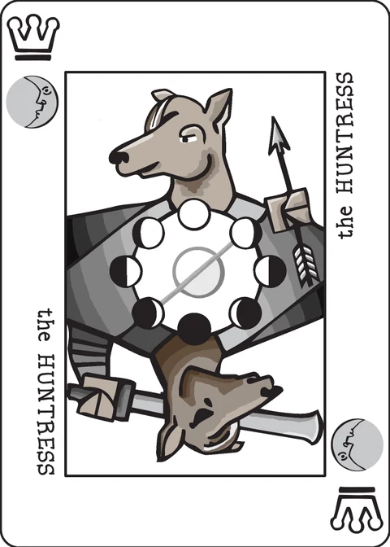

Hexaract
a solitaire adventure game for the decktet
Designed by Dejan Racković. The Kingdom is facing the biggest threat ever! Dark, ancient forces have returned and are unleashing their evil and terror causing destruction and mayhem. You, Jacynth's most famous adventurer, have an important task. Retrieve all 6 pieces of an ancient artifact and bring it to the secret chamber where a ritual will be performed to destroy the source of this evil. Its minions will try to stop you along the way.
Extra material: 5 six-sided dice, suit chips, and a way to keep track of damage. (In this app the dice are rolled with a button and kept in the saved game, the suit chips are counters on the cards and in your supply, and the damage is tracked on a 10-step harm bar.)
Setup
Put suit tokens in a general supply within easy reach.
Separate the aces from the deck. Mix and line them up face down. Flip 3, collect three suit tokens for your personal supply. Discard the face up aces. Flip the remaining aces. These become available as you successfully resolve a crown-ranked card along your journey.
Shuffle the rest of the deck and put it face down. Flip 3 cards from the deck and line them up below the aces to represent your journey through perilous locations, morbid events and enticing encounters.
Game play
Goal:
Survive the whole deck with all 6 different suit tokens at the end.
Phases:
1) Roll & Assign Dice
2) Actions & Rewards
3) Consequences of Inaction
4) Exhaust & Replenish
Roll & Assign Dice
Roll 5d6. A 6 on a die is wild, becoming any number from 1-5. Group any two dice into couplets. Assign couplets of dice to cards. The sum of a couplet must match the rank of the assigned card. Crowns are considered rank 10.
Actions & Rewards
Types of cards matter in this game and their effects are different:
Personalities
Evil minions encountered along your path wish to harm you or inhibit your journey. Defeat them or suffer their foul machinations.
Thwart them by assigning a couplet. Discard their card and draw a resource matching one of their suits, representing a profit of means or education. This resource will prove valuable on your journey. If they held a crown rank, you may also discard a face up ace and collect that resource.
Locations
(cards that are both locations and events are considered locations only)
Locations have fallen under bad influences in these troubled times. Survey the land to assure the royal court the way is clear and safe again.
To complete part of your survey, assign a couplet of dice to a location card. Take one resource matching a suit of that location from the general supply and place on the card. Both couplets may be used.
You may spend resources from your supply to enhance your exploration, whether dice are assigned or not. Only one resource from your personal supply may be spent per turn in this manner. Once placed on a location, resources no longer not count as part of your supply and may not be removed.
As soon as a location card has the necessary resources, discard it and the allocated resources. You have successfully traversed that terrain.
For a location with a crown rank, discard a face up ace to collect that additional resource.
Events
Events represent an unfortunate occurrence along your path, forcing you to expend valuable resources.
Assign a couplet of dice to turn the tables on this event, take a resource matching one from the card and discard the card. If it was a crown event, discard an ace and collect a matching resource token.
Consequences of Inaction
Failing to act has repercussions.
Personalities
Personalities will follow along your journey, tripping you up, stealing opportunities or otherwise getting in your way. Unless you thwart them and escape, suffer one point of harm at the end of each turn.
Locations
Failing to complete a survey is exhausting and challenging to your morale and reputation. Each exhausted location causes you 1 point of harm in the form of fatigue. Fortunately, you have extra time to complete these challenges.
Events
Unresolved events cause you to discard one resource from your supply that matches the event card. If you have no matching resources, there is no effect.
Exhaust & Replenish
Locations do not get tiresome the same turn they come in to play. At the end of your turn, rotate any unresolved location to a horizontal position to show an exhausted state.
Discard any exhausted events. Then rotate any current events to a horizontal aspect to indicate their exhaustion. Fortunately, their influence tapers off.
Draw to refill any vacancies in your three card journey.
End Game
If you accumulate 10 or more points of harm at any time, you lose and the game ends.
If you survive through the entire deck, with no more cards obstructing your journey and at least one of each resource in your personal supply, you win!
The extended deck
I haven't come up with any ideas for extended decktet yet.
Variants
The wiki page leaves this section empty.
Credits
Original design: Dejan Racković. Rules text from the Decktet wiki.
Links
Comments
From the wiki page, the designer: "For keeping track of damage I usually take a card from the discard and put it face-down in front of me but anything will do (d10, pen & paper, beads, tokens etc…). When adding resources from your supply to locations be carefull because you still need to have one of each at the end to win the game and some are harder to obtain then others (on person cards this is distribution of symbols: there are 2 of waves, 3 of leaves and wyrms and 4 of suns, moons and knots.)"
Note on this implementation
Which deck. The wiki never states a deck and its extended-deck section is empty, so this app uses the basic 36-card deck: the six Aces are separated for setup as described, and the other 30 cards are shuffled into the journey deck. The five six- sided dice are rolled once per turn with a button and live in the saved game, so a reload keeps your roll; suit chips are counters, and the damage tracker is the 10-step harm bar.
The first three tokens. "Flip 3, collect three suit tokens" is read as one token matching the suit of each Ace you flip.
Locations and their "necessary resources". This app reads a location as needing one token per suit it shows, each token matching one of the card's suits (so a single-suit location takes one couplet, a two-suit location takes two — possibly both couplets in one turn, as "Both couplets may be used" allows). This is the only reading under which the crown-location bonus can do anything: in the basic deck both Crown locations (the Sea and the End) show a single suit, so without a second needed token there would be nothing for the bonus to add.
The crown bonus. "Discard a face up ace and collect that resource" is read as: spend any one of the three face-up Aces (the Ace's own suit need not match) to collect one extra resource matching a suit of the card you just resolved — into your supply when the card was a personality or event. Exactly three such bonuses exist all game.
Spending from your supply. "Enhance your exploration" is placing one personal-supply token on a location each turn (whether or not you assigned dice), at most one per turn; once placed it has left your supply, exactly as the wiki says.
Wild dice. Only a couplet's sum matters, so the app counts a 6 as whichever number from 1 to 5 makes the sum match and shows the value it counted.
Tiring locations. A location is exempt from rotation only during the turn whose replenish drew it: initial locations count as arriving in turn 1 and tire at the end of turn 2, replenished ones tire at the end of the turn after they arrive. Personalities cost harm at the end of every turn with no grace; an event costs a matching supply token at the end of two consecutive turns (the turn it arrives and once more once it is exhausted) before being discarded in the wiki's "Discard any exhausted events" step.
When an event demands a token you can spare in both suits the wiki leaves the choice to you; the app discards from the suit you hold the most of (ties go to the card's first suit) — always the safer choice.
The end. The game ends when the deck is empty and the journey is clear: you win with at least one token of every suit, and lose without it. 10 or more harm at any time loses immediately — checked before the win, so harm and a cleared journey at the same moment is a loss.
The BGG thread linked from the wiki was unreachable while this was built, so every rule above rests on the wiki text alone.
These rules are copied from the Hexaract page of the Decktet wiki (page revision 6, 4 May 2020) so they can be read offline, under the wiki's CC BY-NC-SA 3.0 licence. Cards by P.D. Magnus, same licence. Card types (personality / location / event) follow the Decktet Book charts.